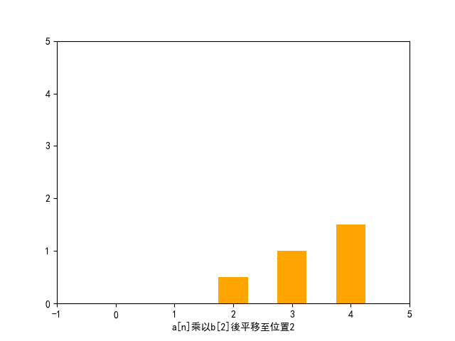
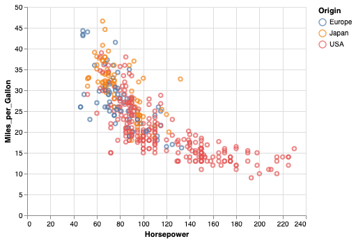

Numpy
Table of Contents
1. 簡介
- NumPy 是 Python 語言的一個擴充程式庫。支援高階大量的維度陣列與矩陣運算，此外也針對陣列運算提供大量的數學函式函式庫。
- Numpy主要用於資料處理上。Numpy 底層以 C 和 Fortran 語言實作，所以能快速操作多重維度的陣列。1
- 當 Python 處理龐大資料時，其原生 list 效能表現並不理想（但可以動態存異質資料），而 Numpy 具備平行處理的能力，可以將操作動作一次套用在大型陣列上。
- Python 多數重量級的資料科學相關套件（例如：Pandas、SciPy、Scikit-learn 等）都幾乎是奠基在 Numpy 的基礎上。因此學會 Numpy 對於往後學習其他資料科學相關套件打好堅實的基礎。
- NumPy 的前身 Numeric 最早是由 Jim Hugunin 與其它協作者共同開發，2005 年，Travis Oliphant 在 Numeric 中結合了另一個同性質的程式庫 Numarray 的特色，並加入了其它擴充功能而開發了 NumPy。NumPy 為開放原始碼並且由許多協作者共同維護開發。3
- 延伸閱讀: 為什麼要用 Numpy？

3. 匯入模組
- 使用模組裡的函式要加模組名稱
import numpy
- 匯入 numpy 模組並使用 np 作為簡寫，這是 Numpy 官方倡導的寫法
import numpy as np
4. NumPy 陣列
4.1. NDArray
- Numpy 中的多維資料型別稱為 ndarray
- Numpy 的重點在於陣列的操作，其所有功能特色都建築在同質且多重維度的 ndarray（N-dimensional array）上。
- ndarray 的關鍵屬性是維度（ndim）、形狀（shape）和數值類型（dtype）。 一般我們稱一維陣列為 vector 而二維陣列為 matrix4。
4.2. 建立ndarray
一開始我們會引入 numpy 模組，透過傳入 list 到 numpy.array() 創建陣列。
- 一維陣列
- 可以將python的list 或 tuple 轉成NumPy Array
import numpy as np np1 = np.array( [1, 2, 3, 4] ) print(np1)
[1 2 3 4]
- 使用 np.arange( ) 方法
import numpy as np np2 = np.arange(5) print("=====np2=====") print(np2) np3 = np.arange(1, 4, 0.5) print("=====np3=====") print(np3)
=====np2===== [0 1 2 3 4] =====np3===== [1. 1.5 2. 2.5 3. 3.5]
- np.arange() v.s. range()
差異：
- range()為 python 內建函數
- range() return 的是 range object，而 np.nrange() return 的是 numpy.ndarray()
- range()不支援 step 為小數，np.arange()支援 step 為小數
- range()為 python 內建函數
- 簡單的矩陣運算
1: import numpy as np 2: np1 = np.array([1, 2, 3]) 3: np2 = np.array([3, 4, 5]) 4: # 陣列相加 5: print(np1 + np2) # [4 6 8] 6: # 顯示相關資訊 7: print(np1.ndim, np1.shape, np1.dtype) # 1 (3,) int64 => 一維陣列, 三個元素, 資料型別
[4 6 8] 1 (3,) int64
- 可以將python的list 或 tuple 轉成NumPy Array
- 二維陣列
import numpy as np np4 = np.array( [[1, 2, 4], [3, 4, 5]] ) print("shape:", np4.shape) print("np4:\n", np4) print("取出第0列:",np4[0]) print("取出第1行:",np4[:,1]) np5 = np.array([np.arange(3), np.arange(3)]) print('np5:\n', np5) np6 = np.arange(8).reshape(2, 4) print('np6:\n', np6)
shape: (2, 3) np4: [[1 2 4] [3 4 5]] 取出第0列: [1 2 4] 取出第1行: [2 4] np5: [[0 1 2] [0 1 2]] np6: [[0 1 2 3] [4 5 6 7]]
- 多維陣列
import numpy as np np7 = np.arange(24).reshape(2, 3, 4) print('np7:\n',np7) np8 = np.arange(13, 60, 2).reshape(2, 3, 4) print("np8:\n", np8)
np7: [[[ 0 1 2 3] [ 4 5 6 7] [ 8 9 10 11]] [[12 13 14 15] [16 17 18 19] [20 21 22 23]]] np8: [[[13 15 17 19] [21 23 25 27] [29 31 33 35]] [[37 39 41 43] [45 47 49 51] [53 55 57 59]]] - 隨機矩陣
- numpy.random.randint()
語法：numpy.random.randint(low, high=None, size=None, dtype=’l’)
函式的作用是，返回一個隨機整型數，範圍從低（包括）到高（不包括），即[low, high)。
如果沒有寫引數 high 的值，則返回[0,low)的值。
1: import numpy as np 2: np.random.seed(0) 3: 4: x1 = np.random.randint(10, size=6) 5: x2 = np.random.randint(10, size=(3,4)) 6: x3 = np.random.randint(10, size=(3,4,5)) 7: print(x1) 8: print(x2) 9: print(x3)
[5 0 3 3 7 9] [[3 5 2 4] [7 6 8 8] [1 6 7 7]] [[[8 1 5 9 8] [9 4 3 0 3] [5 0 2 3 8] [1 3 3 3 7]] [[0 1 9 9 0] [4 7 3 2 7] [2 0 0 4 5] [5 6 8 4 1]] [[4 9 8 1 1] [7 9 9 3 6] [7 2 0 3 5] [9 4 4 6 4]]]
- numpy.random.rand()
根據給定維度生成(0,1)間的資料，包含 0，不包含 1
1: import numpy as np 2: 3: np.random.seed(9627) #設置相同變數，每次生成相同亂數 4: ar = np.random.rand(2,4) 5: print(ar)
[[0.28012059 0.19216219 0.63985614 0.48842053] [0.9441813 0.88992099 0.17534833 0.29543319]]
- 範例
import numpy as np np8 = np.random.random((3, 2)) #矩陣大小以tuple表示 print('np8:\n', np8) # 四個人擲骰子，每人擲兩次 np9 = np.random.randint(1, 7, size=[4, 2]) #矩陣大小以list表示 print('np9:\n', np9)
np8: [[0.7263954 0.71063088] [0.07725825 0.11562424] [0.57923875 0.85345365]] np9: [[5 6] [2 2] [5 5] [5 2]]
- numpy.random.randint()
- 0/1 矩陣
- np.zeros: np.zeros( (陣列各維度大小用逗號區分) )：建立全為 0 的陣列，可以小括號定義陣列的各個維度的大小
import numpy as np zeros = np.zeros( (3, 5) ) print("zeros=>\n{0}".format(zeros))
zeros=> [[0. 0. 0. 0. 0.] [0. 0. 0. 0. 0.] [0. 0. 0. 0. 0.]]
- np.ones: np.ones( (陣列各維度大小用逗號區分) )：用法與 np.zeros 一樣
import numpy as np ones = np.ones( (4, 3) ) print("oness=>\n{0}".format(ones))
oness=> [[1. 1. 1.] [1. 1. 1.] [1. 1. 1.] [1. 1. 1.]]
- np.zeros: np.zeros( (陣列各維度大小用逗號區分) )：建立全為 0 的陣列，可以小括號定義陣列的各個維度的大小
- TODO 型態轉換
astype
- TODO 補入教材
- tmp
1: # 引入 numpy 模組 2: import numpy as np 3: # create identity matrix 4: ary1 = np.eye(3) 5: print(ary1) 6: # create diagonal array 7: ary2 = np.diag((2,1,4,6)) 8: print(ary2) 9: # 10: ary3 = np.array([range(i, i+3) for i in [2,4,6]]) 11: print(ary3) 12: # tile 13: ary4 = np.array([0,1,2]) 14: print(np.tile(ary4,2)) 15: print(np.tile(ary4,(2,2))) 16: ary5 = np.array([[1,2],[6,7]]) 17: print(np.tile(ary5,3)) 18: print(np.tile(ary5,(2,2)))
[[1. 0. 0.] [0. 1. 0.] [0. 0. 1.]] [[2 0 0 0] [0 1 0 0] [0 0 4 0] [0 0 0 6]] [[2 3 4] [4 5 6] [6 7 8]] [0 1 2 0 1 2] [[0 1 2 0 1 2] [0 1 2 0 1 2]] [[1 2 1 2 1 2] [6 7 6 7 6 7]] [[1 2 1 2] [6 7 6 7] [1 2 1 2] [6 7 6 7]]
5. 矩陣運算
5.1. Numpy計算時間比較
(setq org-babel-python-command "ipython --no-banner --classic --no-confirm-exit")
自行比較以下兩個版本的執行時間
ar = np.arange(1000) %timeit ar**3
1: %timeit [i**3 for i in range(1000)]
import numpy as np ar = np.arange(1000) %timeit ar**3
5.2. [課堂練習]
模擬一個37人/7科的全班月考成績(隨機生成)
1 : 33 66 29 2 : 86 1 11 3 : 84 66 81 4 : 76 38 16 5 : 13 27 77 6 : 88 14 47 7 : 45 70 35 8 : 94 79 98
5.3. 矩陣運算
- 矩陣變形:reshape()
- reshape()
- transpose()
- reshape
1: import numpy as np 2: x = np.arange(2,10) 3: print(x.reshape(2,4))
[[2 3 4 5] [6 7 8 9]]
- Flattening and Transpose
1: import numpy as np 2: ac = np.array([np.arange(1,6),np.arange(10,15)]) 3: print(ac) 4: print(ac.ravel()) 5: print(ac.T)
[[ 1 2 3 4 5] [10 11 12 13 14]] [ 1 2 3 4 5 10 11 12 13 14] [[ 1 10] [ 2 11] [ 3 12] [ 4 13] [ 5 14]]
- Add a dimension
1: import numpy as np 2: ar = np.array([14,15,16]) 3: print(ar) 4: print(ar.shape) 5: 6: ar = ar[:,np.newaxis] 7: print(ar.shape) 8: print(ar)
[14 15 16] (3,) (3, 1) [[14] [15] [16]]
- reshape()
- 索引(Indexing)、切片(Slicing)
索引(Indexing)的用途不外乎就是為了要從陣列和矩陣中取值，但除此之外有很多種功能！可以取出連續區間，還可以間隔取值！5
- 選取連續區間 [a:b]
1: import numpy as np 2: a = np.arange(10) ** 2 3: print("a=> {0}".format(a)) 4: print("a[2:5]=> {0}".format(a[2:5]))
a=> [ 0 1 4 9 16 25 36 49 64 81] a[2:5]=> [ 4 9 16]
- 間隔選取[::c]
以1維陣列來說明x[a:b:c]
- a：選取資料的起始索引
- b：選取資料的結束索引+1
- c：選取資料間隔，以索引值可以被此值整除的元素，不指定表示1
1: import numpy as np 2: a = np.arange(10) ** 2 3: print("a==> {0}".format(a)) 4: a[2:9:3] = 999 5: print("a==> {0}".format(a))
a==> [ 0 1 4 9 16 25 36 49 64 81] a==> [ 0 1 999 9 16 999 36 49 999 81]
- a：選取資料的起始索引
- 選取連續區間 [a:b]
- 取出特定行列、特定範圍
- 取出第x列: Ary[x]
- 取出第x行: Ary[:,x]
- 取出第x_{1}~x_{2}列、第y_{1}~y_{2}行的範圍: Ary[x_{1}:x_{2} + 1, y_{1}:y_{2} + 1]
1: import numpy as np 2: a = np.arange(12).reshape(3, 4) 3: print(a) 4: print(a[1]) 5: print(a[:,1]) 6: print(a[1:3, 1:3])
[[ 0 1 2 3] [ 4 5 6 7] [ 8 9 10 11]] [4 5 6 7] [1 5 9] [[ 5 6] [ 9 10]]
- 取出第x列: Ary[x]
- 刪除行/列
np.delete(temp,0,axis=1)#temp為操作物件，0表示要刪除的物件索引，axis表示行還是列，axis=0表示刪除行，axis=1表示刪除列。
1: import numpy as np 2: 3: a = np.arange(12).reshape(3, 4) 4: print(a) 5: a_delCol1 = np.delete(a, 1, 0) 6: print('刪除第1行') 7: print(a_delCol1) 8: a_delRow1 = np.delete(a, 1, 1) 9: print('刪除第1列') 10: print(a_delRow1) 11: print('現在的a') 12: print(a)
[[ 0 1 2 3] [ 4 5 6 7] [ 8 9 10 11]] 刪除第1行 [[ 0 1 2 3] [ 8 9 10 11]] 刪除第1列 [[ 0 2 3] [ 4 6 7] [ 8 10 11]] 現在的a [[ 0 1 2 3] [ 4 5 6 7] [ 8 9 10 11]]
- 迭代(輸出)
如果是要對整個矩陣的值做運算，無需使用迴圈
- 一維陣列
1: import numpy as np 2: a = np.arange(4) ** 2 3: print("a: ",a) 4: for i in a: 5: print("a**(1/2)=> {0}".format(np.round(i**(1/2), 0)))
('a: ', array([0, 1, 4, 9])) a**(1/2)=> 1 a**(1/2)=> 1 a**(1/2)=> 1 a**(1/2)=> 1 - 多維陣列: 多維陣列在for loop中取值時，會以第一維度為優先！
1: import numpy as np 2: a = np.arange(1, 41).reshape(5, 8) 3: for row in a: 4: for i in row: 5: print("{0:3d}".format(i), end='') 6: print() 7:
1 2 3 4 5 6 7 8 9 10 11 12 13 14 15 16 17 18 19 20 21 22 23 24 25 26 27 28 29 30 31 32 33 34 35 36 37 38 39 40
- 一維陣列
- 基礎運算
- 維度相同的矩陣相加、減
import numpy as np a = np.array( [6, 7, 8, 9] ) b = np.arange( 4 ) c = a - b print("a=>{0}".format(a)) print("b=>{0}".format(b)) print("c=>{0}".format(c))
a=>[6 7 8 9] b=>[0 1 2 3] c=>[6 6 6 6]
- 矩陣與常數運算
import numpy as np import math a = np.random.randint(100, size=(2, 4)) #矩陣大小以tuple表示 b = a + 10 c = a**2 print("a=>{0}".format(a)) print("b=>{0}".format(b)) print("c=>{0}".format(c))
a=>[[51 74 98 37] [13 13 74 86]] b=>[[ 61 84 108 47] [ 23 23 84 96]] c=>[[2601 5476 9604 1369] [ 169 169 5476 7396]]
- 維度相同的矩陣相加、減
- 矩陣轉置
\[a=\begin{bmatrix}1&0\\2&3\end{bmatrix}, a^T=\begin{bmatrix}1&2\\0&3\end{bmatrix}\]
import numpy as np a = np.array([[1, 0], [2, 3]]) print(a) print('--Matrix transpose--') print(a.transpose())
[[1 0] [2 3]] --Matrix transpose-- [[1 2] [0 3]]
- 矩陣相乘
- 矩陣乘法
\[a=\begin{bmatrix}a_{11}&a_{12}\\a_{21}&a_{22}\end{bmatrix}, b=\begin{bmatrix}b_{11}&b_{12}&b_{13}\\b_{21}&b_{22}&b_{23}\end{bmatrix}\]
\[a \cdot b=\begin{bmatrix}a_{11}*b_{11}+a_{12}*b_{21}&a_{11}*b_{12}+a_{12}*b_{22}&a_{11}*b_{13}+a_{12}*b_{23}\\a_{21}*b_{11}+a_{22}*b_{21}&a_{21}*b_{12}+a_{22}*b_{22}&a_{21}*b_{13}+a_{22}*b_{23}\end{bmatrix}\]
import numpy as np A = np.array([[1, 2, 3], [4, 3, 2]]) B = np.array([[1, 2], [2, 0], [3, -1]]) print("{0}".format(A.dot(B)))
[[14 -1] [16 6]]
- 相對位置乘法
\[a=\begin{bmatrix}a_{11}&a_{12}\\a_{21}&a_{22}\end{bmatrix}, b=\begin{bmatrix}b_{11}&b_{12}\\b_{21}&b_{22}\end{bmatrix}\]
\[a \cdot b=\begin{bmatrix}a_{11}*b_{11}&a_{12}*b_{12}\\a_{21}*b_{21}&a_{22}*b_{22}\end{bmatrix}\]
import numpy as np A = np.array([[1, 2], [4, 5]]) B = np.array([[7, 8], [9, 10]]) print("A:\n{0}".format(A)) print("B:\n{0}".format(B)) print("A*B:\n{0}".format(A*B))
A: [[1 2] [4 5]] B: [[ 7 8] [ 9 10]] A*B: [[ 7 16] [36 50]]
- 取代矩陣中元素
這裡也可以看出NumPy對於選取矩陣中元素的極好彈性，可直接以條件來當成選取方式
import numpy as np C = np.array([5, -1, 3, 9, 0]) print(C<=0) # 將矩陣中小於等於0的元素取代為0;其他轉為1 C[C<=0] = 0 C[C>0] = 1 print(C)
[False True False False True] [1 0 1 1 0]
- [課堂練習]
- 模擬一個37人/7科的全班月考成績(隨機生成, 0~100)
- 將所有 55<=分數<60 的成績均改為60
- 模擬一個37人/7科的全班月考成績(隨機生成, 0~100)
- 矩陣乘法
- 矩陣間元素相乘
1: import numpy as np 2: ar = np.arange(1,5) 3: print(ar.prod()) 4: 5: ar1 = np.array([np.arange(1,4),np.arange(4,7),np.arange(7,10)]) 6: print(ar1) 7: print(np.prod(ar1, axis=1)) 8: print(ar1.sum()) 9: print(ar1.mean()) 10: print(np.median(ar1))
24 [[1 2 3] [4 5 6] [7 8 9]] [ 6 120 504] 45 5.0 5.0
- 反矩陣
AB=BA=I, 其中 I 為單位矩陣
import numpy as np A = np.array([[4, -7], [2, -3]]) print("A:\n", A) B = np.linalg.inv(A) print("B:\n", B) print("A dot B:\n", A.dot(B))
A: [[ 4 -7] [ 2 -3]] B: [[-1.5 3.5] [-1. 2. ]] A dot B: [[1. 0.] [0. 1.]]
- 合併矩陣
- vstack
import numpy as np a = np.ones((2, 2)) b = np.zeros(2) print(a) print(b) c = np.vstack((a, b)) print(c)
[[1. 1.] [1. 1.]] [0. 0.] [[1. 1.] [1. 1.] [0. 0.]]
- hstack
import numpy as np a = np.ones((2, 2)) b = [[3], [4]] print(a) print(b) c = np.hstack((a, b)) print(c)
[[1. 1.] [1. 1.]] [[3], [4]] [[1. 1. 3.] [1. 1. 4.]]
- vstack
5.4. 矩陣函數
- 官網
- numpy.sum()
- 語法
numpy.sum(a, axis=None, dtype=None, out=None, keepdims=<no value>, initial=<no value>, where=<no value>)
其他參數用法詳見官方網站
- 範例
import numpy as np np_array_2x3 = np.array([[0,2,4],[1,3,5]]) print('=====Array=====') print(np_array_2x3) print('=====列=====') print(np.sum(np_array_2x3, axis = 0)) print('=====行=====') print(np.sum(np_array_2x3, axis = 1)) print('=====陣列總和1=====') print(np.sum(np_array_2x3)) print('=====陣列總和2=====') print(np_array_2x3.sum())
=====Array===== [[0 2 4] [1 3 5]] =====列===== [1 5 9] =====行===== [6 9] =====陣列===== 15 =====陣列===== 15
- 語法
- 其他常用函數
- min()
- max()
- argmin
- mean()
- std()
- var()
- sqrt()
- size()
- dtype()
- itemsize()
import numpy as np np1 = np.random.randint(0, 10, size=[3, 2]) print("np\n", np1) print("np1.sum", np1.sum()) print("sum:", sum(np1)) print("sum:", sum(np1,3)) print("min:", np1.min()) print("max:", np1.max()) print("mean:", np.mean(np1))
np [[0 0] [0 3] [0 3]] np1.sum 6 sum: [0 6] sum: [3 9] min: 0 max: 3 mean: 1.0
- min()
- sum() v.s. np.sum()

Figure 2: sum() v.s. np.sum()
- numpy.max()
- 語法
numpy.max(a, axis=None, out=None, keepdims=False)
- 求序列的最值
- 最少接收一個引數
- axis：預設為列向（也即 axis=0），axis = 1 時為行方向的最值；
- 求序列的最值
- 範例
import numpy as np np_array_2x3 = np.array([[9,2,8],[4,7,5]]) print('=====Array=====') print(np_array_2x3) print('=====列=====') print(np.max(np_array_2x3, axis = 0)) print('=====行=====') print(np.max(np_array_2x3, axis = 1)) print('=====陣列=====') print(np.max(np_array_2x3))
=====Array===== [[9 2 8] [4 7 5]] =====列===== [9 7 8] =====行===== [9 7] =====陣列===== 9
- 語法
- numpy.maxium()
- 語法
numpy.maximum：(X, Y, out=None)- X 與 Y 逐位比較取其大者；
- 最少接收兩個引數
- X 與 Y 逐位比較取其大者；
- 範例
import numpy as np npA1 = np.array([[9,-9,8],[4,7,5]]) npA2 = np.array([[0,1,8],[10,-7,5]]) print("=====npA1=====") print(npA1) print("=====npA2=====") print(npA2) print("=====maximum=====") print(np.maximum(npA1, npA2))
=====npA1===== [[ 9 -9 8] [ 4 7 5]] =====npA2===== [[ 0 1 8] [10 -7 5]] =====maximum===== [[ 9 1 8] [10 7 5]]
- 語法
- numpy.argmax()
- 語法
numpy.argmax(a, axis=None, out=None)[source]¶
- a: 可以轉換為陣列的陣列或物件，我們需要在其中找到最高值的索引。
- axis: 沿著行(axis=0)或列(axis=1)查詢最大值的索引。預設情況下，通過對陣列進行展平可以找到最大值的索引。
- out: np.argmax 方法結果的佔位符。它必須有適當的大小以容納結果。Returns the indices of the maximum values along an axis.
- a: 可以轉換為陣列的陣列或物件，我們需要在其中找到最高值的索引。
- 範例
- 一維陣列
import numpy as np a=np.array([2,6,1,6]) print("Array:") print(a) req_index=np.argmax(a) print("\nIndex with the largest value:") print(req_index) print("\nThe largest value in the array:") print(a[req_index])
Array: [2 6 1 6] Index with the largest value: 1 The largest value in the array: 6
- 二維陣列
import numpy as np a = np.array([[2,1,6], [7,14,5]]) print("Array:") print(a) req_index=np.argmax(a, axis=0) print("\nIndex with the largest value(axis=0):") print(req_index) req_index=np.argmax(a, axis=1) print("\nIndex with the largest value(axis=1):") print(req_index) req_index=np.argmax(a) print("\nIndex with the largest value:") print(req_index)
Array: [[ 2 1 6] [ 7 14 5]] Index with the largest value(axis=0): [1 1 0] Index with the largest value(axis=1): [2 1] Index with the largest value: 4

Figure 3: Sequence of Arg in array
- 一維陣列
- 語法
- about axis

Figure 4: Axis in ndarray
- tile()
numpy.tile()是個什麼函數呢，說白了，就是把數組沿各個方向複製
import numpy as np print('=====一維tile=====') b = np.array([[1, 2], [3, 4]]) b1 = np.tile(b, 2) print(b1) print('=====二維tile=====') b2 = np.tile(b, (2, 3)) print(b2)
=====一維tile===== [[1 2 1 2] [3 4 3 4]] =====二維tile===== [[1 2 1 2 1 2] [3 4 3 4 3 4] [1 2 1 2 1 2] [3 4 3 4 3 4]]
- numpy.allclose
- Returns True if two arrays are element-wise equal within a tolerance.
- The tolerance values are positive, typically very small numbers. The relative difference (rtol * abs(b)) and the absolute difference atol are added together to compare against the absolute difference between a and b.
- NaNs are treated as equal if they are in the same place and if equal_nan=True. Infs are treated as equal if they are in the same place and of the same sign in both arrays.
- 語法
numpy.allclose(a, b, rtol=1e-05, atol=1e-08, equal_nan=False)
- Parameters
- a, b: array_like. Input arrays to compare.
- rtol: float. The relative tolerance parameter (see Notes).
- atol: float. The absolute tolerance parameter (see Notes).
- equal_nan: bool. Whether to compare NaN’s as equal. If True, NaN’s in a will be considered equal to NaN’s in b in the output array.
- a, b: array_like. Input arrays to compare.
- Returns
- allclose: bool. Returns True if the two arrays are equal within the given tolerance; False otherwise.
- allclose: bool. Returns True if the two arrays are equal within the given tolerance; False otherwise.
- See also:
- DEMO
import numpy as np import math print(math.pi) x = np.array([[3.14159265, -0.1], [-0.1, 0.1]]) y = np.array([[math.pi, -0.1], [-0.1, 0.1]]) z1 = np.array([[[3.14159265, -0.1], [-0.1, 0.1]], [[3.14159265, -0.1], [-0.1, 0.1]]]) z2 = np.array([[[math.pi, -0.1], [-0.1, 0.1]], [[math.pi, -0.1], [-0.1, 0.1]]]) print(np.allclose(x,y)) # Returns true, as expected print(np.allclose(x,z1)) # Also returns true, even though matrices are different shapes. Unwanted. a = np.array([[2,2,2], [3,3,3]]) b = np.array([[2,3,2], [3,3,2]]) print("=====allclose(atol=0.5)=====") print(np.allclose(a, b, atol=0.5)) print("=====allclose(atol=1.0)=====") print(np.allclose(a, b, atol=1.0)) print("=====equal()=====") print(np.equal(a,b)) a = np.array([[2,2,2], [3,3,3.1]]) print(np.allclose(a, b, atol=1.0)) print('=====isclose()=====') print(np.isclose(a, b, atol=1.0))
3.141592653589793 True True =====allclose(atol=0.5)===== False =====allclose(atol=1.0)===== True =====equal()===== [[ True False True] [ True True False]] False =====isclose()===== [[ True True True] [ True True False]]
- Returns True if two arrays are element-wise equal within a tolerance.
5.5. [作業1]
- 隨機產生一組 30*5 個 0~100 的陣列，模擬成一個班級的某次考試成績(30 人*5 科)。
- 輸出此次 5 科考科的全班總分、平均、最高分、最低分、標準差。
- 將全班分數以「開根號乘以 10」的方式進行調整。
- 如果調整完分數還是不及格，把分數改為39分。
- 輸出不及格人數。
- 輸出全班分數(至小數點第二位,關於小數點的控制請自行Google關鍵字“numpy.set_printoptions”)。
- 結果範例
各科總分: [1341 1522 1548 1411 1627] 各科平均: [44.7 50.73 51.6 47.03 54.23] 各科最高分: [94 95 94 98 96] 各科最低分: [6 0 4 0 0] 各科標準差: [23.78 27.85 28.07 29.48 27.59] 全班不及格科目數: 51 調整後分數: 1: 39.00 86.60 60.00 39.00 62.45 2: 84.85 90.00 39.00 81.24 39.00 3: 39.00 86.60 80.62 80.00 39.00 4: 83.07 39.00 39.00 74.83 77.46 5: 72.80 39.00 91.10 67.82 39.00 6: 39.00 70.00 65.57 95.39 97.98 7: 39.00 90.00 96.95 82.46 88.88 8: 60.00 92.74 85.44 87.75 83.67 9: 64.81 39.00 92.20 68.56 39.00 10: 69.28 68.56 88.88 39.00 85.44 11: 39.00 39.00 94.87 39.00 76.16 12: 39.00 39.00 39.00 98.99 78.10 13: 75.50 88.32 39.00 74.16 66.33 14: 39.00 39.00 39.00 95.92 79.37 15: 70.00 39.00 39.00 83.07 73.48 16: 39.00 39.00 68.56 39.00 95.92 17: 65.57 39.00 39.00 39.00 74.83 18: 95.39 63.25 39.00 39.00 88.32 19: 39.00 95.39 60.83 39.00 74.83 20: 75.50 39.00 67.08 39.00 96.95 21: 39.00 39.00 83.67 39.00 77.46 22: 71.41 60.83 69.28 88.88 77.46 23: 74.16 97.47 39.00 73.48 93.27 24: 83.67 84.85 80.00 74.83 39.00 25: 96.95 95.92 87.18 68.56 39.00 26: 39.00 83.67 74.83 39.00 39.00 27: 60.83 77.46 83.67 83.07 91.65 28: 69.28 64.81 89.44 39.00 39.00 29: 88.88 83.07 92.74 82.46 95.92 30: 86.60 74.16 88.32 86.60 39.00
5.6. [作業2]
- 模擬一個37人/7科的全班月考成績(隨機生成)
- 將所有原始分數轉換為Z分數
5.7. 解聯立方程式
Numpy的linalg function可以用來解線性方程組，若目標方程式為\[Ax=b\]，其中\[x\]為所求之解，求解語法為：
1: import numpy as np 2: x = np.linalg.solve(A, b)
- 範例1
以如下方程式為例
\[\begin{cases}2x+y=5\\x+y=3\end{cases}\]
可將之視為求解\[Ax=b\]，其中
\[A=\begin{pmatrix}2&1\\1&1 \end{pmatrix}\], \[b=\begin{pmatrix} 5\\3 \end{pmatrix} \]
- 範例2
求解下列方程式
\[\begin{cases}3x_0+2x_1+x_2=11\\2x_0+3x_1+x_2=13\\x_0+x_1+4x_2=12 \end{cases}\], 以\[Ax=b\]表示，則
\[A=\begin{pmatrix}3&2&1\\2&3&1\\1&1&4\end{pmatrix}, x=\begin{pmatrix}x_0\\x_1\\x_2\end{pmatrix}, b=\begin{pmatrix}11\\13\\12\end{pmatrix}\]
5.8. numpy 矩陣間的運算
- element-wise
1: import numpy as np 2: 3: ar = np.array([[1,2,3],[4,5,6],[2,3,4]]) 4: print(ar) 5: print(ar+ar) 6: print(ar**.5) 7: 8: ar1 = np.array([[2,2],[3,3],[1,1]]) 9: print(ar.dot(ar1)) #矩陣dot
[[1 2 3] [4 5 6] [2 3 4]] [[ 2 4 6] [ 8 10 12] [ 4 6 8]] [[1. 1.41421356 1.73205081] [2. 2.23606798 2.44948974] [1.41421356 1.73205081 2. ]] [[11 11] [29 29] [17 17]]
- Expressing Conditional Logic as Array Operations
1: import numpy as np 2: 3: xr = np.array([1.1, 1.2, 1.3, 1.4, 1.5]) 4: yr = np.array([2.1, 2.2, 2.3, 2.4, 2.5]) 5: cond = np.array([True, False, True, True, False]) 6: 7: result = [(x if c else y) 8: for x, y, c in zip(xr, yr, cond)] 9: print(result) 10: print(type(result)) 11: print(np.where(cond, xr, yr)) 12: print(type(result)) 13: #結果都傳回list,為何有,的差異
[1.1, 2.2, 1.3, 1.4, 2.5] <class 'list'> [1.1 2.2 1.3 1.4 2.5] <class 'list'>
- Braodcasting
1: import numpy as np 2: 3: x1 = np.arange(9.0).reshape((3,3)) 4: print(x1) 5: x2 = np.arange(1, 4) 6: print(x2) 7: print(np.multiply(x1,x2))
[[0. 1. 2.] [3. 4. 5.] [6. 7. 8.]] [1 2 3] [[ 0. 2. 6.] [ 3. 8. 15.] [ 6. 14. 24.]]
- Array sorting
1: import numpy as np 2: 3: ar = np.array([[3,2,5],[10,-1,9],[4,1,12]]) 4: print("origin:\n",ar) 5: ar.sort(axis=0) 6: print("axis=0:\n",ar) 7: ar.sort(axis=1) 8: print("axis=1:\n",ar)
origin: [[ 3 2 5] [10 -1 9] [ 4 1 12]] axis=0: [[ 3 -1 5] [ 4 1 9] [10 2 12]] axis=1: [[-1 3 5] [ 1 4 9] [ 2 10 12]]
- Array reverse
1: import numpy as np 2: 3: ar = np.arange(5) 4: print(ar[::-1])
[4 3 2 1 0]
5.9. 矩陣間的 convolute 運算
- numpy.convolve(a, v, mode=’full’)，這是 numpy 函數中的卷積函數庫
參數：
- a:(N,)輸入的一維數組
- b:(M,)輸入的第二個一維數組
- mode:{’full’, ’valid’, ’same’}參數可選
- full 預設值，返回每一個卷積值，長度是 N+M-1,在卷積的邊緣處，信號不重疊，存在邊際效應。
- full 預設值，返回每一個卷積值，長度是 N+M-1,在卷積的邊緣處，信號不重疊，存在邊際效應。
- same 返回的數組長度為 max(M, N),邊際效應依舊存在。
- valid 返回的數組長度為 max(M,N)-min(M,N)+1,此時返回的是完全重疊的點。邊緣的點無效。
1: # -*- coding: utf-8 -*- 2: # 解決圖形中文問題 3: from pylab import * 4: mpl.rcParams['font.sans-serif'] = ['SimHei'] 5: plt.rcParams['axes.unicode_minus']=False 6: 7: import numpy as np 8: import matplotlib.pylab as plt 9: 10: a = np.array([1, 2, 3]) 11: b = np.array([0.1, 1, 0.5]) 12: y = np.arange(0, 3) 13: print("a: ",a) 14: print("b: ",b) 15: 16: # 1. 17: print(a*b[0]) 18: print(a*b[1]) 19: print(a*b[2]) 20: plt.clf() 21: plt.xlim((-1, 5)) 22: plt.ylim((0, 5)) 23: plt.bar(y, a*b[0], .5, color='blue') 24: plt.xlabel('a[n]乘以b[0]後平移至位置0'); 25: plt.savefig("anb0.png") 26: # 2. 27: plt.clf() 28: plt.xlim((-1, 5)) 29: plt.ylim((0, 5)) 30: plt.bar(y+1, a*b[1], .5, color='green') 31: plt.xlabel('a[n]乘以b[1]後平移至位置1'); 32: plt.savefig("anb1.png") 33: # 3. 34: plt.clf() 35: plt.xlim((-1, 5)) 36: plt.ylim((0, 5)) 37: plt.bar(y+2, a*b[2], .5, color='orange') 38: plt.xlabel('a[n]乘以b[2]後平移至位置2'); 39: plt.savefig("anb2.png") 40: # Stack 41: anb0 = [0.1, 0.2, 0.3, 0, 0] 42: anb1 = [ 0, 1, 2, 3, 0] 43: anb2 = [ 0, 0, 0.5, 1, 1.5] 44: plt.clf() 45: plt.xlim((-1, 5)) 46: plt.ylim((0, 5)) 47: plt.bar(np.arange(0,5), anb0, .5, color='blue') 48: plt.bar(np.arange(0,5), anb1, .5, color='green', bottom=anb0) 49: plt.bar(np.arange(0,5), anb2, .5, color='orange', bottom=np.add(anb0,anb1)) 50: plt.xlabel('將三圖疊加起來'); 51: 52: plt.savefig("abStack.png") 53: print("Full:",np.convolve(a, b)) 54: print("same:",np.convolve(a, b, 'same')) 55: print("valid:",np.convolve(a, b, 'valid')) 56:
a: [1 2 3] b: [0.1 1. 0.5] [0.1 0.2 0.3] [1. 2. 3.] [0.5 1. 1.5] Full: [0.1 1.2 2.8 4. 1.5] same: [1.2 2.8 4. ] valid: [2.8]
以矩陣 a = np.array([1, 2, 3]), b = np.array([0.1, 1, 0.5])為例，numpy.convolve 的計算過程如下：
- 求出 a*b[0]，平移至位置 0，如圖[[fig:convolve-1]

Figure 5: convolve 的計算過程-1
- 求出 a*b[1]，平移至位置 1，如圖6
Figure 6: convolve 的計算過程-2
- 求出 a*b[2]，平移至位置 2，如圖7

Figure 7: convolve 的計算過程-1
Figure 8: convolve 的計算過程-1
6. Numpy 檔案輸出輸入
6.1. Google Colab
- 先將資料檔儲存到Google Drive中
將要讀取的資料檔(txt, csv)上傳到Google雲端硬碟
- 要求授權
在Colab新增一個cell，執行下列程式
from google.colab import drive drive.mount('/content/drive')
選擇“Connected to Google Drive”
- 測試
- 要求授權
- 先點這裡下載範例資料
- 上傳資料檔
執行以下程式
!ls drive/MyDrive/ !cat drive/MyDrive/scores.csv
如果能看到資料的內容，就表示成功了，接下來就能用NumPy來讀取、分析這個資料檔
- 要求授權
6.2. 用NumPy來讀資料檔
- load
在Numpy內會使用.loadtxt或特定的np.genfromtxt來讀取文字檔
import numpy as np myAry = np.loadtxt('drive/MyDrive/scores.csv', delimiter=',') print(myAry)
[[109. 87. 100. 86. 50. ] [ 86. 66. 68.97 33.2 55. ] [ 82. 51. 72.87 57. 70. ] [ 90. 81. 100. 100. 100. ] [ 80. 45. 39.66 0. 0. ] [ 83. 36. 74.14 20. 10. ] [ 84. 51. 67.24 25. 0. ] [ 75. 72. 89.66 43. 40. ] [ 76. 63. 96.55 40. 0. ] [ 80. 75. 100. 32.8 50. ] [ 85. 96. 89.48 83.7 30. ]]
- save
將處理完的陣列回存成csv檔：
import numpy as np myAry = np.loadtxt('drive/MyDrive/scores.csv', delimiter=',') print(myAry) np.savetxt('drive/MyDrive/newScores.csv', myAry)
6.4. Bineary Format
- save(), load()
import numpy as np a = np.arange(0, 12).reshape(3,4) print(a) np.save('a', a) # 讀入 b = np.load('a.npy') print(b)
[[ 0 1 2 3] [ 4 5 6 7] [ 8 9 10 11]] [[ 0 1 2 3] [ 4 5 6 7] [ 8 9 10 11]]
- savez()
我們可以儲存多個陣列在一個zip的檔案中，使用np.savez就可以了！
import numpy as np aAry = [1,2,3,4,5,6] bAry = [7,8,9,10,11,12] #save np.savez('ab.npz', a = aAry, b = bAry) #load myZip = np.load('ab.npz') print(myZip['a']) print(myZip['b'])
[1 2 3 4 5 6] [ 7 8 9 10 11 12]
6.5. 讀取混合格式的文字資料
如果資料中某些欄位的資料格式是字串 (string)，處理起來相當麻煩，改用 numpy.genfromtxt 會比較簡單。8
Importing data with genfromtxt
目標文字檔(csv)如下：
1: cat cs-scores2.csv
學號,平時成績,打字成績,作業成績,期中考,期末考 201811101,109.00,87,100.00,86.00,50.00 201811102,86.00,66,68.97,33.20,55.00 201811103,82.00,51,72.87,57.00,70.00 201811104,90.00,81,100.00,100.00,100.00 201811105,80.00,45,39.66,0.00,0.00 201811106,83.00,36,74.14,20.00,10.00 201811107,84.00,51,67.24,25.00,0.00 201811108,75.00,72,89.66,43.00,40.00 201811109,76.00,63,96.55,40.00,0.00 201811110,80.00,75,100.00,32.80,50.00 201811111,85.00,96,89.48,83.70,30.00
Pyton 3在讀取文字時，dtype應設為U(Unicode)，否則會在讀到的字首多出b9
import numpy as np # Python3 is working with Unicode. # I had the same issue when using loadtxt with dtype='S'. But using dtype='U as Unicode string in both numpy.loadtxt or numpy.genfromtxt, it will give output without b data = np.genfromtxt("cs-scores2.csv", delimiter=',', dtype=[('id', 'U10'), ('cls', float), ('typing', float), ('hw', float), ('mid', float), ('finl', float)], skip_header=1, encoding='UTF-8') print(data)
[('201811101', 109., 87., 100. , 86. , 50.)
('201811102', 86., 66., 68.97, 33.2, 55.)
('201811103', 82., 51., 72.87, 57. , 70.)
('201811104', 90., 81., 100. , 100. , 100.)
('201811105', 80., 45., 39.66, 0. , 0.)
('201811106', 83., 36., 74.14, 20. , 10.)
('201811107', 84., 51., 67.24, 25. , 0.)
('201811108', 75., 72., 89.66, 43. , 40.)
('201811109', 76., 63., 96.55, 40. , 0.)
('201811110', 80., 75., 100. , 32.8, 50.)
('201811111', 85., 96., 89.48, 83.7, 30.)]
6.6. 讀取一個欄位資料
在 numpy.genfromtxt() 中, 使用 usecols 參數指定取出的欄位編號, 即可取出特定欄位
import numpy as np classScore = np.genfromtxt("cs-scores2.csv", delimiter=',', skip_header=1, dtype=float, usecols=(2,), unpack=True, encoding='UTF-8') print(classScore)
[87. 66. 51. 81. 45. 36. 51. 72. 63. 75. 96.]
*
6.7. Binary Format 10
- save() / load()
1: import numpy as np 2: import subprocess 3: 4: x = np.arange(20) 5: print("原始內容:", x) 6: np.save("test_array.npy", x) #.npy 7: y = np.load("test_array.npy") 8: print("讀回來:", y)
原始內容: [ 0 1 2 3 4 5 6 7 8 9 10 11 12 13 14 15 16 17 18 19] 讀回來: [ 0 1 2 3 4 5 6 7 8 9 10 11 12 13 14 15 16 17 18 19]
- savez(): 儲存多個陣列在一個 zip 的檔案中
1: import numpy as np 2: aData = [1,2,3,4,5,6] 3: bData = [7,8,9,10,11,12] 4: np.savez('my_archive.npz', a=aData, b=bData) 5: myArch = np.load('my_archive.npz') 6: print(myArch['a'])
[1 2 3 4 5 6]
6.8. Text Files
- savetxt
1: import numpy as np 2: 3: ac = np.array([np.arange(1,6),np.arange(10,15)]) 4: np.savetxt('txtfile.txt', ac) 5: 6: myArr = np.loadtxt('txtfile.txt', delimiter=' ') 7: print(myArr)
[[ 1. 2. 3. 4. 5.] [10. 11. 12. 13. 14.]]
- savez(): 儲存多個陣列在一個 zip 的檔案中
1: import numpy as np 2: aData = [1,2,3,4,5,6] 3: bData = [7,8,9,10,11,12] 4: np.savez('my_archive.npz', a=aData, b=bData) 5: myArch = np.load('my_archive.npz') 6: print(myArch['a'])
[1 2 3 4 5 6]
7. Data Visualization
7.1. pylab
1: import numpy as np 2: import pylab as pl 3: 4: x = np.arange(0.0, 2.0*np.pi, 0.01) 5: print("x:", x[:5]) 6: y = np.sin(x) 7: print("y:", y[:5]) 8: 9: pl.plot(x,y) 10: pl.xlabel('x') 11: pl.ylabel('y') 12: pl.title('sin') 13: pl.savefig("sinPlot.png")
x: [0. 0.01 0.02 0.03 0.04] y: [0. 0.00999983 0.01999867 0.0299955 0.03998933]

Figure 9: sinPlot
7.2. Bokeh
1: import numpy as np 2: from bokeh.plotting import figure, show 3: from bokeh.io import output_notebook, export_png, output_file, save 4: import matplotlib.pylab as plt 5: 6: N = 4000 7: 8: x = np.random.random(size=N)*100 9: y = np.random.random(size=N)*100 10: radii = np.random.random(size=N)*1.5 11: colors = ["#%02x%02x%02x" % (r, g, 150) for r, g in zip(np.floor(50+2*x).astype(int), np.floor(30+2*y).astype(int))] 12: 13: output_notebook() 14: p = figure(title="Basic Title", plot_width=300, plot_height=300) 15: p.circle(x, y, radius=radii, fill_color=colors, fill_alpha=0.6, line_color=None) 16: output_file('bokehPlot.html', mode='inline') 17: save(p)
7.3. seaborn
1: import seaborn as sns 2: sns.set(style="ticks") 3: 4: #Load the example dataset for Anscombe's quartet 5: df = sns.load_dataset("anscombe") 6: 7: # Show the results of a linear regression within each dataset 8: sns.lmplot(x="x", y="y", col="dataset", hue="dataset", data=df, col_wrap=2, ci=None, palette="muted", height=4, scatter_kws={'s' :50,'alpha':1}) 9: 10: import matplotlib.pyplot as plt 11: #sns.sns_plot.savefig("seabornPlot.png") 12: plt.savefig("seabornPlot.png")

Figure 10: seabornPlot
7.4. Altair
1: import altair as alt 2: from vega_datasets import data 3: 4: cars = data.cars() 5: 6: chart = alt.Chart(cars).mark_point().encode( x='Horsepower', y='Miles_per_Gallon', color='Origin').interactive() 7: 8: #import pylab as pl 9: #pl.savefig("altairPlot.png") 10: chart.save('altairPlot.png', webdriver='firefox') 11: chart.savechart('altairPlot.html')

Figure 11: altairPlot